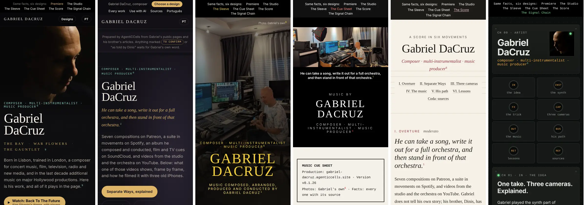

Synthetic users: Gabriel DaCruz, round 1
Site: https://gabriel-dacruz.agenticcells.site/ at ddf6875 (v0.1.26). Run: 23 November 2026, about 15:30 UTC, by design.b.rounds. Look score: 3.2 (3, 3, 2, 4, 4). Best design votes: The Sleeve twice, then The Cue Sheet, The Score and The Signal Chain once each. Nobody said "wow"; the critic called The Sleeve's hero "almost a wow". The review.
Method: Synthetic users. One agent played five personas, in its own folder: - a phone visitor; - a film or game director looking for a composer; - a low-vision reader; - a design critic; - a music listener or fellow musician.
A fault in this run's capture: the chooser page /d/ was saved over the home page's files, so the personas judged Premiere (the home design) only from its thumbnail. I recaptured the home page afterwards (below). These are simulations, and never replace a real person.
| Persona | Look | Best | Weakest | The one change |
|---|---|---|---|---|
| Phone visitor | 3 | The Sleeve | The Score | "put a play button for one track or video on the first screen" |
| Director | 3 | The Cue Sheet | The Score | "a 'For directors' block near the top, with the three productions, a reel of cues and a way to get in touch" |
| Low-vision reader | 2 | The Score | The Signal Chain | "raise the size and contrast of all small-caps labels and captions" |
| Design critic | 4 | The Sleeve | The Studio | "carry each design's idea through the body" |
| Musician | 4 | The Signal Chain | The Score | "show real thumbnails on the video tiles" |
Agreed by three or more
- The hero quote is the best line on the site (all five): "He can take a song, write it out for a full orchestra, and then stand in front of that orchestra."
- The Sleeve's hero has the strongest look.
- "TO CONFIRM" everywhere weakens trust (four personas), above all "his exact role on each is TO CONFIRM".
- The music is too far down, and the black or blank tiles hurt.
- There is no way to contact him about work. The only route is "MESSAGE ON INSTAGRAM", and that is for lessons.
- The phone layouts cramp the content: - the design switcher wraps to three lines; - the poster strip is cut at "WAR FI"; - the /works/ table is cut at "SPOT".
